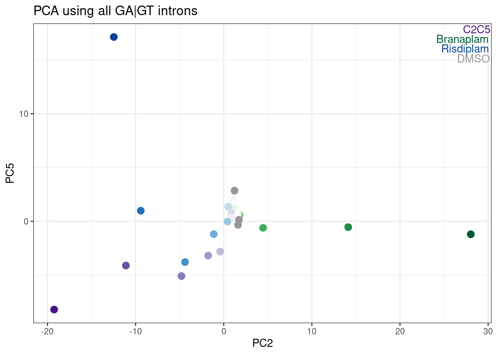

20220922_Explore_SubparRNAseq
Last updated: 2022-09-26
Checks: 5 2
Knit directory: 20211209_JingxinRNAseq/analysis/
This reproducible R Markdown analysis was created with workflowr (version 1.6.2). The Checks tab describes the reproducibility checks that were applied when the results were created. The Past versions tab lists the development history.
The R Markdown file has unstaged changes. To know which version of the R Markdown file created these results, you’ll want to first commit it to the Git repo. If you’re still working on the analysis, you can ignore this warning. When you’re finished, you can run wflow_publish to commit the R Markdown file and build the HTML.
Great job! The global environment was empty. Objects defined in the global environment can affect the analysis in your R Markdown file in unknown ways. For reproduciblity it’s best to always run the code in an empty environment.
The command set.seed(19900924) was run prior to running the code in the R Markdown file. Setting a seed ensures that any results that rely on randomness, e.g. subsampling or permutations, are reproducible.
Great job! Recording the operating system, R version, and package versions is critical for reproducibility.
Nice! There were no cached chunks for this analysis, so you can be confident that you successfully produced the results during this run.
Using absolute paths to the files within your workflowr project makes it difficult for you and others to run your code on a different machine. Change the absolute path(s) below to the suggested relative path(s) to make your code more reproducible.
| absolute | relative |
|---|---|
| /project2/yangili1/bjf79/20211209_JingxinRNAseq/code/bigwigs/unstranded/(.+?).bw | ../code/bigwigs/unstranded/(.+?).bw |
Great! You are using Git for version control. Tracking code development and connecting the code version to the results is critical for reproducibility.
The results in this page were generated with repository version 9a23a3e. See the Past versions tab to see a history of the changes made to the R Markdown and HTML files.
Note that you need to be careful to ensure that all relevant files for the analysis have been committed to Git prior to generating the results (you can use wflow_publish or wflow_git_commit). workflowr only checks the R Markdown file, but you know if there are other scripts or data files that it depends on. Below is the status of the Git repository when the results were generated:
Ignored files:
Ignored: .DS_Store
Ignored: .Rhistory
Ignored: .Rproj.user/
Ignored: ._.DS_Store
Ignored: analysis/.RData
Ignored: analysis/.Rhistory
Ignored: analysis/20220707_TitrationSeries_DE_testing.nb.html
Ignored: code/%
Ignored: code/.DS_Store
Ignored: code/._.DS_Store
Ignored: code/._DOCK7.pdf
Ignored: code/._DOCK7_DMSO1.pdf
Ignored: code/._DOCK7_SM2_1.pdf
Ignored: code/._FKTN_DMSO_1.pdf
Ignored: code/._FKTN_SM2_1.pdf
Ignored: code/._MAPT.pdf
Ignored: code/._PKD1_DMSO_1.pdf
Ignored: code/._PKD1_SM2_1.pdf
Ignored: code/.snakemake/
Ignored: code/1KG_HighCoverageCalls.samplelist.txt
Ignored: code/5ssSeqs.tab
Ignored: code/Alignments/
Ignored: code/ChemCLIP/
Ignored: code/ClinVar/
Ignored: code/DE_testing/
Ignored: code/DE_tests.mat.counts.gz
Ignored: code/DE_tests.txt.gz
Ignored: code/DoseResponseData/
Ignored: code/Fastq/
Ignored: code/FastqFastp/
Ignored: code/FragLenths/
Ignored: code/Meme/
Ignored: code/Multiqc/
Ignored: code/OMIM/
Ignored: code/OldBigWigs/
Ignored: code/PhyloP/
Ignored: code/QC/
Ignored: code/ReferenceGenomes/
Ignored: code/Session.vim
Ignored: code/SplicingAnalysis/
Ignored: code/TracksSession
Ignored: code/bigwigs/
Ignored: code/featureCounts/
Ignored: code/geena/
Ignored: code/hg38ToMm39.over.chain.gz
Ignored: code/igv_session.template.xml
Ignored: code/igv_session.xml
Ignored: code/log
Ignored: code/logs/
Ignored: code/scratch/
Ignored: code/test.txt.gz
Ignored: code/testPlottingWithMyScript.ForJingxin.sh
Ignored: code/testPlottingWithMyScript.ForJingxin2.sh
Ignored: code/testPlottingWithMyScript.ForJingxin3.sh
Ignored: code/testPlottingWithMyScript.ForJingxin4.sh
Ignored: code/testPlottingWithMyScript.sh
Ignored: data/._Hijikata_TableS1_41598_2017_8902_MOESM2_ESM.xls
Ignored: data/._Hijikata_TableS2_41598_2017_8902_MOESM3_ESM.xls
Ignored: output/._PioritizedIntronTargets.pdf
Unstaged changes:
Modified: analysis/20220922_ExploreSubparRNAseq.Rmd
Modified: analysis/20220923_ExploreSpecificityEstimates.Rmd
Note that any generated files, e.g. HTML, png, CSS, etc., are not included in this status report because it is ok for generated content to have uncommitted changes.
These are the previous versions of the repository in which changes were made to the R Markdown (analysis/20220922_ExploreSubparRNAseq.Rmd) and HTML (docs/20220922_ExploreSubparRNAseq.html) files. If you’ve configured a remote Git repository (see ?wflow_git_remote), click on the hyperlinks in the table below to view the files as they were in that past version.
| File | Version | Author | Date | Message |
|---|---|---|---|---|
| Rmd | 9a23a3e | Benjmain Fair | 2022-09-26 | update site |
| html | 9a23a3e | Benjmain Fair | 2022-09-26 | update site |
| Rmd | 272cd76 | Benjmain Fair | 2022-09-26 | update site |
| html | 272cd76 | Benjmain Fair | 2022-09-26 | update site |
Intro
Jingxin’s lab has made many compounds (ie >50) from one or two scaffolds, and is interseted in using RNA-seq to readout splicing effects. Obviously at this scale, with limited resources, and with low prior knowledge about their splice-modulating activity, it doesn’t make sense to do a full titration experiment with RNA-seq for each compound. We are more likely to settle with a single dose, at a smaller read depth, and try to learn what we can about the activity and specificity of these compounds. Here I will explore our existing data just to gain some intuitions on the power of RNA-seq, keeping in mind what it would be like if we only had one replicate at lower read coverage. Eventually I may do a more careful power analysis, involving sub-sampling reads from our existing data, and re-analyzing them to simulate potential study designs.
Analysis
First let’s read in library size in terms of mapped reads.
library(tidyverse)
library(gplots)
library(RColorBrewer)
counts <- read_tsv("../output/QC/ReadCountsAndJunctionsPerSamples.tsv", col_names = c("fn", "ChromosomalReads"))
sample.list <- read_tsv("../code/bigwigs/BigwigList.tsv",
col_names = c("SampleName", "bigwig", "group", "strand")) %>%
filter(strand==".") %>%
dplyr::select(-strand) %>%
mutate(old.sample.name = str_replace(bigwig, "/project2/yangili1/bjf79/20211209_JingxinRNAseq/code/bigwigs/unstranded/(.+?).bw", "\\1")) %>%
separate(SampleName, into=c("treatment", "dose.nM", "cell.type", "libType", "rep"), convert=T, remove=F, sep="_") %>%
left_join(
read_tsv("../code/bigwigs/BigwigList.groups.tsv", col_names = c("group", "color", "bed", "supergroup")),
by="group"
)
TreatmentColorsForLabels <- sample.list %>%
group_by(treatment) %>%
filter(dose.nM == max(dose.nM) | treatment == "DMSO") %>%
ungroup() %>%
distinct(treatment, .keep_all=T) %>%
arrange(dose.nM) %>%
mutate(vjust=row_number()*1.2)
TreatmentColorsForLabelsKey <- TreatmentColorsForLabels %>%
filter(!treatment=="DMSO") %>%
dplyr::select(treatment, color) %>% deframe()
TreatmentColorsLabels.Layer <- geom_text(
data = TreatmentColorsForLabels,
aes(label=treatment, color=color, vjust=vjust),
y=Inf, x=Inf, hjust=1.05
)
counts.plot.dat <- counts %>%
mutate(old.sample.name = str_replace(fn, "Alignments/STAR_Align/(.+?)/Aligned.sortedByCoord.out.bam", "\\1")) %>%
inner_join(sample.list) %>%
arrange(cell.type, libType, desc(treatment=="DMSO"), treatment, dose.nM, rep) %>%
mutate(SampleName = factor(SampleName, levels=SampleName)) %>%
mutate(Experiment = case_when(
libType == "chRNA" ~ "nascent RNA profiling",
cell.type == "LCL" & libType == "polyA" ~ "dose response experiment",
cell.type == "Fibroblast" ~ "Initial experiment in fibroblast"
)) %>%
mutate(label = paste0(treatment,"; ", dose.nM))
counts.plot.labels <- counts.plot.dat %>%
dplyr::select(SampleName, label) %>% deframe()
ggplot(counts.plot.dat, aes(x=SampleName, y=ChromosomalReads/2E6, fill=color)) +
geom_col() +
scale_fill_identity() +
scale_x_discrete(name="Sample; treatment_nanomolar-dose", label=counts.plot.labels) +
facet_grid(cols = vars(Experiment), scales="free", space = "free_x") +
theme_classic() +
theme(axis.text.x = element_text(angle = 45, vjust = 1, hjust=1, size=5)) +
theme(strip.text.x = element_text(size = 8)) +
labs(title="RNA-seq datasets", y="Read count (M)")
| Version | Author | Date |
|---|---|---|
| 272cd76 | Benjmain Fair | 2022-09-26 |
Now let’s read in the table of a few hundred GA-GT splice sites that I previously shared with Jingxin, along with some other splice count tables… I want to see how rare these GA-GT splice sites are in our data, to get a sense how many reads we need to detect them.
GA.GT.Introns <- read_tsv("../output/EC50Estimtes.FromPSI.txt.gz")
all.samples.PSI <- read_tsv("../code/SplicingAnalysis/leafcutter_all_samples/PSI.table.bed.gz")
all.samples.junccounts <- read_tsv("../code/SplicingAnalysis/leafcutter_all_samples/JuncCounts.table.bed.gz")
all.samples.5ss <- read_tsv("../code/SplicingAnalysis/FullSpliceSiteAnnotations/JuncfilesMerged.annotated.basic.bed.5ss.tab.gz", col_names = c("intron", "seq", "score")) %>%
mutate(intron = str_replace(intron, "^(.+?)::.+$", "\\1")) %>%
separate(intron, into=c("chrom", "start", "stop", "strand"), sep="_", convert=T, remove=F)
all.samples.intron.annotations <- read_tsv("../code/SplicingAnalysis/FullSpliceSiteAnnotations/JuncfilesMerged.annotated.basic.bed.gz")
All.GA.GT <- all.samples.5ss %>%
filter(str_detect(seq, "^\\w{2}GAGT")) %>%
inner_join(all.samples.intron.annotations %>%
rename(stop=end) %>%
dplyr::select(-score)) %>%
left_join(
GA.GT.Introns %>%
dplyr::select(chrom=`#Chrom`, start, stop=end, strand=strand.y, LowerLimit, UpperLimit, UpstreamSpliceAcceptor, spearman.coef.Branaplam, spearman.coef.C2C5,spearman.coef.Risdiplam)
) %>%
mutate(GAGT.set = case_when(
!is.na(LowerLimit) ~ "Juncs modelled in LCL",
!is.na(spearman.coef.Branaplam) ~ "Juncs counted in LCL",
TRUE ~ "Other juncs observed across datasets"
)) %>%
inner_join(
all.samples.junccounts %>%
dplyr::select(junc, contains("LCL")) %>%
dplyr::select(junc, contains("polyA")) %>%
mutate(intron = str_replace(junc, "^(chr.+?):(.+?):(.+?):clu.+?([+-])$", "\\1_\\2_\\3_\\4"))
)
GA.GT.CPM.Plot.dat <- All.GA.GT %>%
dplyr::select(intron, GAGT.set, contains("LCL")) %>%
add_count(GAGT.set) %>%
gather("SampleName", "JuncCounts", contains("LCL")) %>%
group_by(SampleName, n, GAGT.set) %>%
summarise(sumJuncCounts = sum(JuncCounts)) %>%
inner_join(counts.plot.dat) %>%
mutate(CPM=sumJuncCounts/(ChromosomalReads/1E6)) %>%
mutate(FacetLabel = paste0(GAGT.set, ";n=",n)) %>%
arrange(cell.type, libType, desc(treatment=="DMSO"), treatment, dose.nM, rep, GAGT.set)
GA.GT.CPM.Plot.dat$SampleName <- factor(GA.GT.CPM.Plot.dat$SampleName, levels=unique(GA.GT.CPM.Plot.dat$SampleName))
ggplot(GA.GT.CPM.Plot.dat, aes(x=SampleName, y=CPM, fill=color, color=color)) +
geom_col() +
scale_fill_identity() +
scale_color_identity() +
scale_x_discrete(name="Sample; treatment_nanomolar-dose", label=counts.plot.labels) +
facet_wrap(~FacetLabel, scales="free_y") +
theme_classic() +
theme(axis.text.x = element_text(angle = 45, vjust = 1, hjust=1, size=5)) +
theme(strip.text.x = element_text(size = 6)) +
labs(title="DetectionOf GA|GT introns in aggregate", y="CountsPerMillion")
| Version | Author | Date |
|---|---|---|
| 272cd76 | Benjmain Fair | 2022-09-26 |
Ok, aggregating the set of 600 or so junctions that I modelled I see clear dose-dependent differences between DMSO and treatments, with CountsPerMillions (expression of junction reads) in the hundreds… Even with a single sample at a fraction of the read depth, i think this would be easily detectable.
Perhaps another way to consider what it would be like to analyze data with just one replicate, is to look at delta-PSI, based on either 1 sample, or the average of 3 samples, from the fibroblast data…
cluster_sig_files <- list.files("../code/SplicingAnalysis/leafcutter/differential_splicing", "*_cluster_significance.txt", full.names = T)
effect_sizes_files <- list.files("../code/SplicingAnalysis/leafcutter/differential_splicing", "*_effect_sizes.txt", full.names = T)
treatments <- str_replace(cluster_sig_files, ".+/(.+?)_cluster_significance.txt", "\\1")
cluster.sig <- map(cluster_sig_files, read_tsv) %>%
set_names(cluster_sig_files) %>%
bind_rows(.id="f") %>%
mutate(treatment = str_replace(f, ".+/(.+?)_cluster_significance.txt", "\\1")) %>%
select(-f)
effect_sizes <- map(effect_sizes_files, read_tsv) %>%
set_names(effect_sizes_files) %>%
bind_rows(.id="f") %>%
mutate(treatment = str_replace(f, ".+/(.+?)_effect_sizes.txt", "\\1")) %>%
select(-f) %>%
unite("psi_treatment", treatments, sep=" ", na.rm=T) %>%
mutate(psi_treatment = as.numeric(psi_treatment),
cluster = str_replace(intron, "(.+?:).+:(.+?)", "\\1\\2"))
#Based on all introns
all.samples.PSI %>%
dplyr::select(1:6, contains("Fibroblast")) %>%
dplyr::select(-c(1:6)) %>%
drop_na() %>%
as.matrix() %>%
cor() %>%
heatmap.2(trace='none')
| Version | Author | Date |
|---|---|---|
| 272cd76 | Benjmain Fair | 2022-09-26 |
#Based on all GA|GT introns
all.samples.PSI %>%
dplyr::select(1:6, contains("Fibroblast")) %>%
inner_join(dplyr::select(All.GA.GT, `#Chrom`=chrom, start, end=stop, strand)) %>%
dplyr::select(-c(1:6)) %>%
drop_na() %>%
as.matrix() %>%
cor() %>%
heatmap.2(trace='none')
| Version | Author | Date |
|---|---|---|
| 272cd76 | Benjmain Fair | 2022-09-26 |
Lastly, I think way to plot it that Yang is interested in is to average the 3 replicates for treatment, calculate delta-psi (from DMSO averaged across three replicates), and compare to the delta-psi from just a single replicate. Let’s include one GA-GT introns for this…
DMSO.mean.PSI <- all.samples.PSI %>%
dplyr::select(1:6, contains("Fibroblast")) %>%
inner_join(dplyr::select(All.GA.GT, `#Chrom`=chrom, start, end=stop, strand)) %>%
drop_na() %>%
dplyr::select(junc, contains("Fibroblast")) %>%
gather("SampleName", "PSI", contains("Fibroblast")) %>%
inner_join(sample.list) %>%
filter(treatment == "DMSO") %>%
group_by(junc) %>%
summarise(meanPSI.DMSO = mean(PSI)) %>%
ungroup()
treament.mean.PSI <- all.samples.PSI %>%
dplyr::select(1:6, contains("Fibroblast")) %>%
inner_join(dplyr::select(All.GA.GT, `#Chrom`=chrom, start, end=stop, strand)) %>%
drop_na() %>%
dplyr::select(junc, contains("Fibroblast")) %>%
gather("SampleName", "PSI", contains("Fibroblast")) %>%
inner_join(sample.list) %>%
filter(!treatment == "DMSO") %>%
group_by(treatment, junc) %>%
summarise(PSI = mean(PSI)) %>%
ungroup() %>%
mutate(SampleName = paste(treatment, "mean", sep="_")) %>%
mutate(PSI.Calculation = "Average across 3 treatment replicates")
Compare3vs1Replicate.Dat.To.Plot <- all.samples.PSI %>%
dplyr::select(1:6, contains("Fibroblast")) %>%
inner_join(dplyr::select(All.GA.GT, `#Chrom`=chrom, start, end=stop, strand)) %>%
drop_na() %>%
dplyr::select(junc, contains("Fibroblast")) %>%
gather("SampleName", "PSI", contains("Fibroblast")) %>%
inner_join(sample.list) %>%
filter(!treatment == "DMSO") %>%
dplyr::select(treatment, SampleName, junc, PSI) %>%
mutate(PSI.Calculation = "Single treatment replicate") %>%
bind_rows(treament.mean.PSI) %>%
inner_join(DMSO.mean.PSI) %>%
mutate(DeltaPSI = PSI-meanPSI.DMSO)
ggplot(Compare3vs1Replicate.Dat.To.Plot, aes(x=DeltaPSI, color=treatment)) +
stat_ecdf(aes(linetype=PSI.Calculation)) +
facet_wrap(~treatment) +
theme_bw() +
coord_cartesian(xlim=c(-10, 10)) +
labs(y="ecdf", title='effects of GA|GT introns')
Ok, so the mean genomewide distribution (plotted as ecdf) of the delta-PSI of GA.GT introns looks visually indistinguishable whether you average 3 replicates or if you just use one replicate.
Let’s now plot these DeltaPSIs again (comparing deltaPSI calculated from one replicate, versus average from three replicates) as a correlation matrix, with clustering the rows and columns…
Compare3vs1Replicate.Dat.To.Plot.As.matrix <- Compare3vs1Replicate.Dat.To.Plot %>%
dplyr::select(SampleName, junc, DeltaPSI) %>%
pivot_wider(names_from = "SampleName", values_from="DeltaPSI") %>%
column_to_rownames("junc")
ConvertToColorVector <- function(Vector, PalletteString="Set1"){
ConversionKey <- setNames(brewer.pal(length(unique(Vector)), PalletteString), unique(Vector))[1:length(unique(Vector))]
ColorVector <- recode(Vector, !!!ConversionKey)
return( list(Key=ConversionKey, ColorVector=ColorVector))
}
Rowcols <- colnames(Compare3vs1Replicate.Dat.To.Plot.As.matrix) %>%
str_replace("^(.+?)_.+", "\\1") %>% ConvertToColorVector()
Colcols <- colnames(Compare3vs1Replicate.Dat.To.Plot.As.matrix) %>%
str_detect("mean") %>% as.character() %>% ConvertToColorVector(PalletteString="Set2")
# Row colors are treatments
# Column colors are 1 or 3 replicates
cor(Compare3vs1Replicate.Dat.To.Plot.As.matrix) %>%
heatmap.2(trace='none', ColSideColors = Colcols$ColorVector, RowSideColors = Rowcols$ColorVector)
Let’s plot deltaPSI from 1 vs 3 averaged replicates for some individual introns. A random sample of GA|GT introns. I always find looking at a random sample of introns to be helpful, to gain some intuition.
sample_n_of <- function(data, size, ...) {
dots <- quos(...)
group_ids <- data %>%
group_by(!!! dots) %>%
group_indices()
sampled_groups <- sample(unique(group_ids), size)
data %>%
filter(group_ids %in% sampled_groups)
}
set.seed(0)
Compare3vs1Replicate.Dat.To.Plot %>%
sample_n_of(20, junc) %>%
ggplot(aes(y=DeltaPSI, x=SampleName, color=PSI.Calculation, fill=treatment)) +
geom_col() +
facet_wrap(~junc,scales="free_y") +
theme_bw() +
theme(axis.title.x=element_blank(),
axis.text.x=element_blank(),
axis.ticks.x=element_blank()) +
labs(title="20 random GA|GT introns", y="DeltaPSI (versus DMSO from 3 replicates)", color="Treatment PSI from")Hmm.. so as expected, individual intron measurements can be quite noisy, and I still haven’t figured out how or if I will want to do any differential splicing tests at the individual intron level.
Let’s go back to thinking about characterizing samples on a global level… I wonder if it will be useful to plot new samples in a previously determined priniciple component space that is more interpretable. For example, let’s go back to the dose response experiment, calculate principal components, and overlay the fibroblast samples in the same principle component axes. Keep in mind the experiments were done in different cell types, so I’m not sure what to expect here, but let’s just see…
#First compute principle components from dose response data
pca.results <- all.samples.PSI %>%
inner_join(
dplyr::select(All.GA.GT, `#Chrom`=chrom, start, end=stop, strand)
) %>%
drop_na() %>%
dplyr::select(1:6, contains("LCL")) %>%
dplyr::select(1:6, contains("polyA")) %>%
dplyr::select(junc, contains("LCL")) %>%
column_to_rownames("junc") %>%
scale() %>% t() %>% prcomp(scale=T)
summary(pca.results)Importance of components:
PC1 PC2 PC3 PC4 PC5 PC6 PC7
Standard deviation 17.1445 8.3535 6.58435 4.88941 4.21117 3.98381 3.44426
Proportion of Variance 0.5148 0.1222 0.07593 0.04187 0.03106 0.02779 0.02078
Cumulative Proportion 0.5148 0.6370 0.71290 0.75477 0.78583 0.81362 0.83440
PC8 PC9 PC10 PC11 PC12 PC13 PC14
Standard deviation 3.29972 3.02333 2.72737 2.68984 2.4602 2.40520 2.34934
Proportion of Variance 0.01907 0.01601 0.01303 0.01267 0.0106 0.01013 0.00967
Cumulative Proportion 0.85347 0.86948 0.88250 0.89518 0.9058 0.91591 0.92557
PC15 PC16 PC17 PC18 PC19 PC20 PC21
Standard deviation 2.22745 2.15526 2.0963 2.07448 1.98977 1.93936 1.85475
Proportion of Variance 0.00869 0.00814 0.0077 0.00754 0.00693 0.00659 0.00602
Cumulative Proportion 0.93426 0.94240 0.9501 0.95763 0.96456 0.97115 0.97717
PC22 PC23 PC24 PC25 PC26 PC27
Standard deviation 1.75061 1.67522 1.62255 1.52060 1.48911 1.928e-14
Proportion of Variance 0.00537 0.00491 0.00461 0.00405 0.00388 0.000e+00
Cumulative Proportion 0.98254 0.98746 0.99207 0.99612 1.00000 1.000e+00# Then plot original samples
pca.results$x %>%
as.data.frame() %>%
rownames_to_column("SampleName") %>%
dplyr::select(SampleName, PC1, PC2, PC3) %>%
left_join(sample.list, by="SampleName") %>%
ggplot(aes(x=PC1, y=PC2, color=color)) +
TreatmentColorsLabels.Layer +
geom_point(size=3) +
scale_color_identity() +
theme_bw() +
labs(title = "PCA using all GA|GT introns", x="PC1 (52% variance explained)", y="PC2 (15% variance explained)")Now let’s try plotting the fibroblast data in the old PC space. From visually looking at a few loci in the genome browser, I already know that SM2 is a lot like branaplam, so I’ll look for that effect…
FirboblastDat <- all.samples.PSI %>%
inner_join(
dplyr::select(All.GA.GT, `#Chrom`=chrom, start, end=stop, strand)
) %>%
drop_na() %>%
dplyr::select(junc, contains("Fibroblast")) %>%
column_to_rownames("junc") %>%
scale() %>% t()
Fibroblastdat.projected <- predict(pca.results, FirboblastDat)
TreatmentColorsForLabels.FibroblastColorsAdded <-
sample.list %>%
group_by(treatment) %>%
filter(dose.nM == max(dose.nM) | treatment == "DMSO" | cell.type=="Fibroblast") %>%
ungroup() %>%
distinct(treatment, .keep_all=T) %>%
arrange(dose.nM) %>%
mutate(vjust=row_number()*1.2)
TreatmentColorsLabels.Layer.FibroblastColorsAdded <- geom_text(
data = TreatmentColorsForLabels.FibroblastColorsAdded,
aes(label=treatment, color=color, vjust=vjust),
y=Inf, x=Inf, hjust=1.05
)
bind_rows(
Fibroblastdat.projected %>% as.data.frame(),
pca.results$x %>% as.data.frame()
) %>%
rownames_to_column("SampleName") %>%
dplyr::select(SampleName, PC1, PC2, PC3) %>%
left_join(sample.list, by="SampleName") %>%
ggplot(aes(x=PC1, y=PC2, color=color, shape=cell.type)) +
geom_point(size=3) +
scale_color_identity() +
TreatmentColorsLabels.Layer.FibroblastColorsAdded +
theme_bw() +
labs(title = "PCA using all GA|GT introns", x="PC1 (52% variance explained)", y="PC2 (15% variance explained)")
Ok, I rather like looking at the data this way, and each point is a single sample, and each point is placed nicely in a place I expect and can somewhat interpret in these two dimensions.
Conclusion
though I haven’t worked out the details of how I would want to perform an analysis with one RNA-seq replicate, I’m confident there is enough genome-wide information to at the very least discriminate “active” from inactive compounds from 1 replicate…
We might not need to do a formal statistical test (ie leafcutter) for each splice event to get a decent profile of each treatment. I could probably consider doing simpler things like looking at meta-intron features (the sum of junction counts many GA|GT introns), or if I wanted to get a broad sense of specificity, plotting things as I have done in the same PC space as previously calculated will at least distinguish the branaplam-vs-risdiplam dimension. Though, a better understanding of specificity (particularly for new dimensions that might not easily be described in the risdiplam-branaplam axis) may require more unbiased analysis which will no doubt benefit from first doing splice-event-level statistical tests.
sessionInfo()R version 3.6.1 (2019-07-05)
Platform: x86_64-pc-linux-gnu (64-bit)
Running under: CentOS Linux 7 (Core)
Matrix products: default
BLAS/LAPACK: /software/openblas-0.2.19-el7-x86_64/lib/libopenblas_haswellp-r0.2.19.so
locale:
[1] LC_CTYPE=en_US.UTF-8 LC_NUMERIC=C LC_TIME=C
[4] LC_COLLATE=C LC_MONETARY=C LC_MESSAGES=C
[7] LC_PAPER=C LC_NAME=C LC_ADDRESS=C
[10] LC_TELEPHONE=C LC_MEASUREMENT=C LC_IDENTIFICATION=C
attached base packages:
[1] stats graphics grDevices utils datasets methods base
other attached packages:
[1] RColorBrewer_1.1-2 gplots_3.0.1.1 forcats_0.4.0 stringr_1.4.0
[5] dplyr_1.0.9 purrr_0.3.4 readr_1.3.1 tidyr_1.2.0
[9] tibble_3.1.7 ggplot2_3.3.6 tidyverse_1.3.0
loaded via a namespace (and not attached):
[1] Rcpp_1.0.5 lubridate_1.7.4 gtools_3.9.2.2 assertthat_0.2.1
[5] rprojroot_2.0.2 digest_0.6.20 utf8_1.1.4 R6_2.4.0
[9] cellranger_1.1.0 backports_1.4.1 reprex_0.3.0 evaluate_0.15
[13] httr_1.4.4 highr_0.9 pillar_1.7.0 rlang_1.0.5
[17] readxl_1.3.1 gdata_2.18.0 rstudioapi_0.14 whisker_0.3-2
[21] rmarkdown_1.13 labeling_0.3 munsell_0.5.0 broom_1.0.0
[25] compiler_3.6.1 httpuv_1.5.1 modelr_0.1.8 xfun_0.31
[29] pkgconfig_2.0.2 htmltools_0.5.3 tidyselect_1.1.2 workflowr_1.6.2
[33] fansi_0.4.0 crayon_1.3.4 dbplyr_1.4.2 withr_2.5.0
[37] later_0.8.0 bitops_1.0-6 grid_3.6.1 jsonlite_1.6
[41] gtable_0.3.0 lifecycle_1.0.1 DBI_1.1.0 git2r_0.26.1
[45] magrittr_1.5 scales_1.1.0 KernSmooth_2.23-15 cli_3.3.0
[49] stringi_1.4.3 farver_2.1.0 fs_1.5.2 promises_1.0.1
[53] xml2_1.3.2 ellipsis_0.3.2 generics_0.1.3 vctrs_0.4.1
[57] tools_3.6.1 glue_1.6.2 hms_0.5.3 fastmap_1.1.0
[61] yaml_2.2.0 colorspace_1.4-1 caTools_1.17.1.2 rvest_0.3.5
[65] knitr_1.39 haven_2.3.1